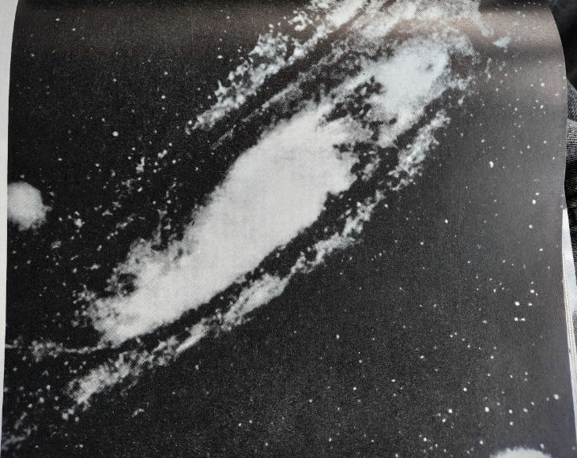
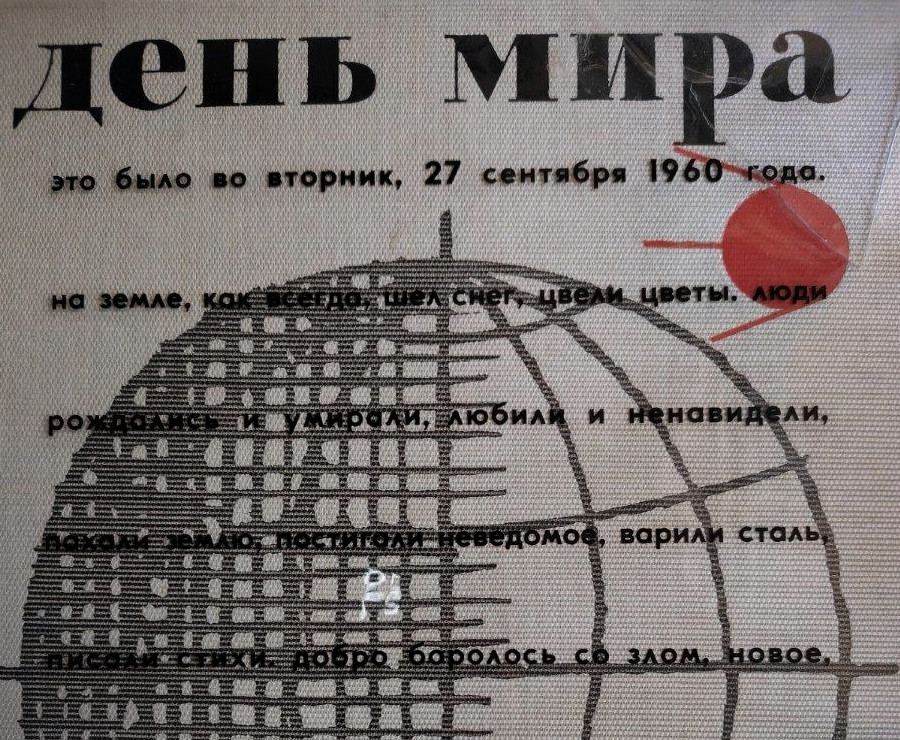
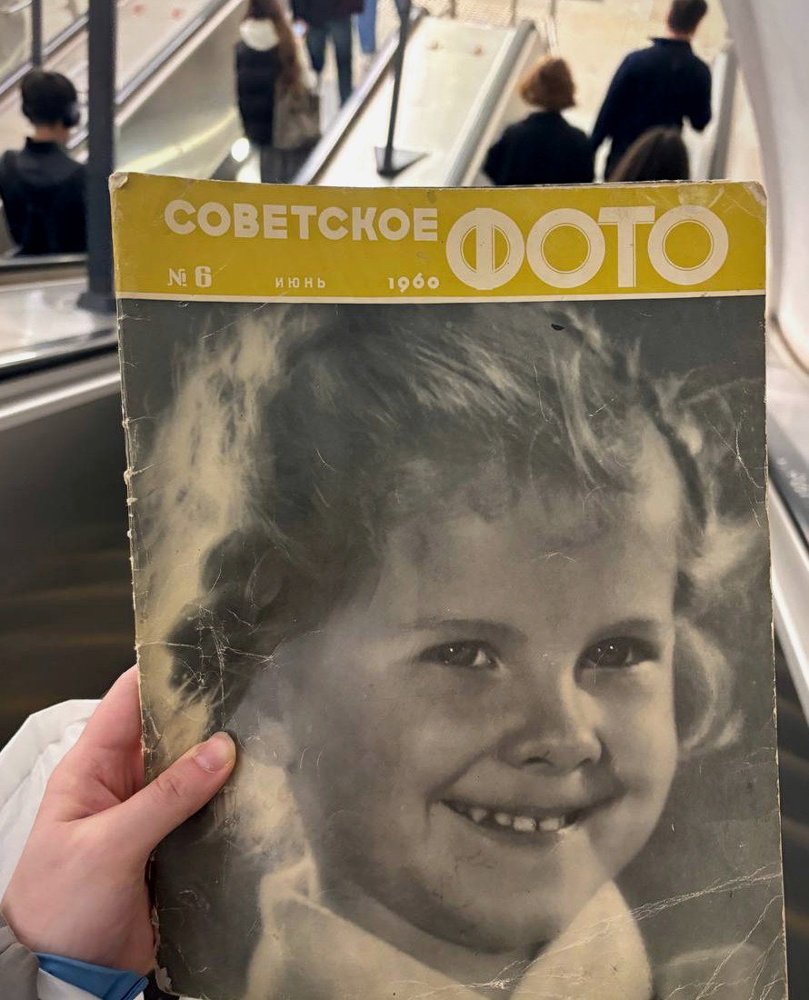
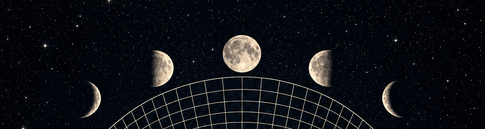

Фестиваль
ПОЛНОЧЬ
25—27 СЕНТЯБРЯ ’26
Маслова Слобода · Тверская область
ЭКСПЕРИМЕНТ ПО СОВМЕСТНОМУ БУДУЩЕМУ
Внимание: сигнал устойчив. Городская спешка остаётся за пределами эфира.
Фестиваль
25—27 СЕНТЯБРЯ ’26
Маслова Слобода · Тверская область
ЭКСПЕРИМЕНТ ПО СОВМЕСТНОМУ БУДУЩЕМУ
Внимание: сигнал устойчив. Городская спешка остаётся за пределами эфира.
Сигнал из будущего · Передача 01
На три дня «Полночь» — маленькая станция. Можно выдохнуть и снова заняться тем, что делается руками, а не по списку.
Нас держит одна старая картинка. Учёные эпохи оттепели мечтали о мирном будущем: наука там не подгоняет человека, а оставляет воздух, космос и время смотреть на тех, кто рядом. Голоса в той кинохронике тихие и ясные. На этой частоте и проведём выходные.
Город отстанет. Останутся костёр, баня, разговоры, мастерские, музыка и право ничего не успевать.

Не всякая пауза требует заполнения
Полевой журнал № 01 · Территория базы
Передаём с территории базы. У Масловского озера археологи копают городище Маслово 1 — поселение первых веков нашей эры. В 2025-м на раскопе открылись плотная застройка, три столбовые постройки, квадратные подполья и остатки бревенчатой стены.
В слое — тонкостенная лепная керамика, железные ножи, кусок топора, шлак и редкие бронзовые украшения. Место говорит само, слой за слоем.
Для нас это не урок истории. До костра и ночной вечеринки здесь уже жили люди, которым было важно быть рядом.
Археологи останутся на раскопе. Мы — на три дня. Этого хватит, чтобы оставить свой слой: не в земле, а в памяти.

96 м² раскопа · три постройки · четыре подполья · один общий след
Лаборатория коллажа · Архив Валерии
В архиве мастерской — космос, научные хроники, журнальные лица, случайные фразы и бумага, которая пережила несколько эпох. Правильную картинку собирать не нужно.
Поймайте кусок, который захочется увезти с собой.

Материалы экспедиции: журналы из личного архива Валерии
Передача 02 · Как появилась «Полночь»
Из разговоров о начале. Валерия пришла не с фестивалем. Она хотела устроить юбилей Олега — день для своего человека, не для афиши.
Как это выросло. Олег забрал организацию себе. Компания не стала сжимать всё обратно в один вечер и дорастила идею до трёх дней в лесу.
Зачем лес. Не ради отчёта и не ради идеального порядка событий. Ради друзей и места, где можно быть внимательнее к себе и к другим. Мы из МФТИ: наука для нас — любопытство и мирное будущее, не гонка. Творчество — способ выразить себя и лучше себя понять. Война в эту картину не входит.

“Полночь” — это не место, где нужно всё успеть
Программа наблюдений · Пятница / суббота
Воскресный режим · Передача 03
По ходу выходных будет то, чего нет в программе. Всё по желанию и ничего не должно мешать отдыху. Поорать в лес, собрать грибы, половить рыбу или просто побыть в тишине — можно в любой момент.

Рассекреченные протоколы редакции · Архив № 10
«Я согласна почти на что угодно, лишь бы было вэлью. Необязательно денежное».
Решение комиссии: принимать в форме разговоров, песен, коллажей и внезапных открытий.
«Так, отмена по куртке NASA, пишут, что это полнейшая паль. У нас на фестивале такого не допускается».
«Ещё деньги собирать не начали, а бюджет фестиваля уже -60к из-за палёных бомберов Balenciaga для Глеба».
Решение комиссии: качество космической экипировки требует дополнительной проверки. Вечеринка от Глеба остаётся в программе.
«Мы гордимся своей работой, мы очень хорошо её сделали. Правда, результатов нет».
Решение комиссии: признать костёр, память и общее присутствие допустимыми результатами.
«Ребята, чтобы не опозориться на лайнапе я записался в школу электронной музыки и диджеинга».
Решение комиссии: повышение квалификации приветствуется.